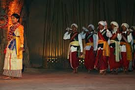

Exploring India's Culture and Heritage
Classical Dance Forms of India
Loho is a traditional tribal folk dance of the Santhal community, primarily found in the states of Jharkhand, West Bengal, Bihar, and Odisha. It is a dance form performed mostly during festive and social occasions, such as harvest festivals, marriages, and community celebrations. Loho reflects the joyful spirit, unity, and rich cultural traditions of the tribal people. It is especially popular among women, who take the lead in performing this lively dance.
Loho is a traditional tribal folk dance of the Santhal community, primarily found in the states of Jharkhand, West Bengal, Bihar, and Odisha. It is a dance form performed mostly during festive and social occasions, such as harvest festivals, marriages, and community celebrations.
The origins of Loho dance can be traced back to the ancient traditions of the Santhal tribe, one of the largest indigenous communities in India. For centuries, dance and music have been an inseparable part of Santhal life, used not just for entertainment but also for rituals, seasonal celebrations, and community bonding. Loho, in particular, emerged as a celebratory dance during agricultural and harvest seasons, marking gratitude toward nature and the earth for its bounty.
Loho is performed in a group formation, usually in a line or circle, with dancers linking arms or holding hands. The steps are rhythmic and repetitive, accompanied by clapping, foot stamping, and graceful swinging of the body. The simplicity of the movements makes it easy for everyone to join in, turning it into a collective celebration. Traditional instruments like the madal, dhol, nagara, and flute provide the musical background, while the dancers often wear colorful tribal costumes and jewelry that enhance the visual beauty of the performance.
In recent years, Loho has gained visibility through cultural festivals, tribal exhibitions, and school programs, where it is showcased as a part of India's diverse tribal heritage. Efforts are being made by cultural organizations and the government to preserve and promote this art form. Despite modernization, Loho continues to be performed with the same enthusiasm and cultural pride, keeping the spirit of the Santhal community alive.
Loho dance is more than just entertainment; it is a symbol of cultural identity and a medium of social bonding among the tribal communities. It provides a platform for expressing emotions, joy, and togetherness, especially during important seasonal events like the harvest. The dance also serves as a way to pass down traditions, music, and stories from one generation to the next. Through Loho, the community celebrates its connection to nature, land, and ancestral values.